1. Trang chủ: xem việc được giao
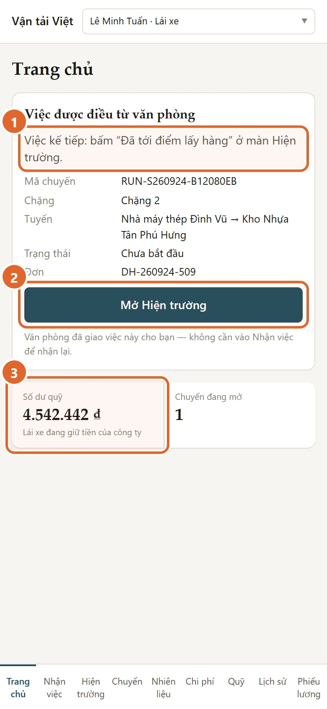
- Việc kế tiếp: nút nào cần bấm, và bấm ở màn nào.
- Mở Hiện trường: vào màn bấm mốc.
- Số dư quỹ của bạn.
Việc văn phòng đã giao thì bạn không cần vào "Nhận việc" để nhận lại. "Nhận việc" chỉ dùng khi bạn đã tới điểm lấy hàng mà văn phòng chưa giao việc.
2. Hiện trường: chặng của bạn
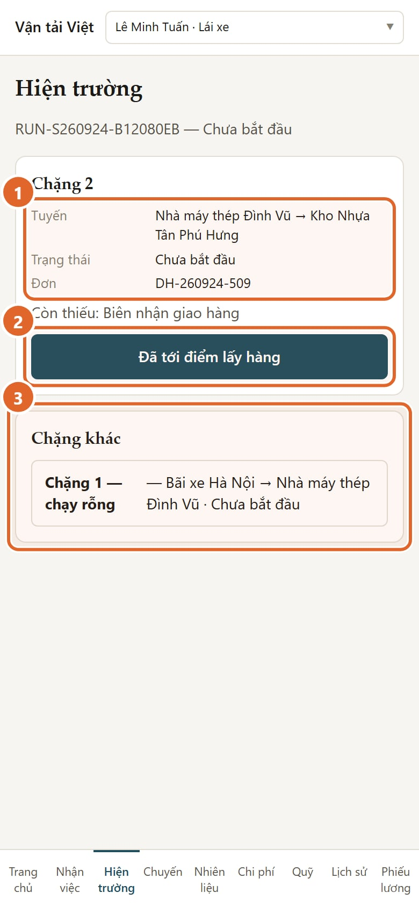
- Chặng đang làm: tuyến, trạng thái, mã đơn.
- Nút bấm được lúc này. Màn chỉ hiện những nút đúng bước.
- Chặng khác: các chặng còn lại của việc đang làm, thường là chặng chạy rỗng.
Chặng rỗng là đoạn xe chạy không chở hàng, ví dụ từ bãi tới điểm lấy. Chặng này không có nút nào. Văn phòng tự cho chạy và hoàn tất. Dòng của nó có thể vẫn ghi "Chưa bắt đầu"; bạn không cần làm gì.
Chặng có hàng là đoạn xe chở hàng của đơn, từ điểm lấy tới điểm giao. Mọi nút bạn bấm đều ở chặng này.
3. Tới điểm lấy hàng
Bấm "Đã tới điểm lấy hàng". Màn hiện ba nút:
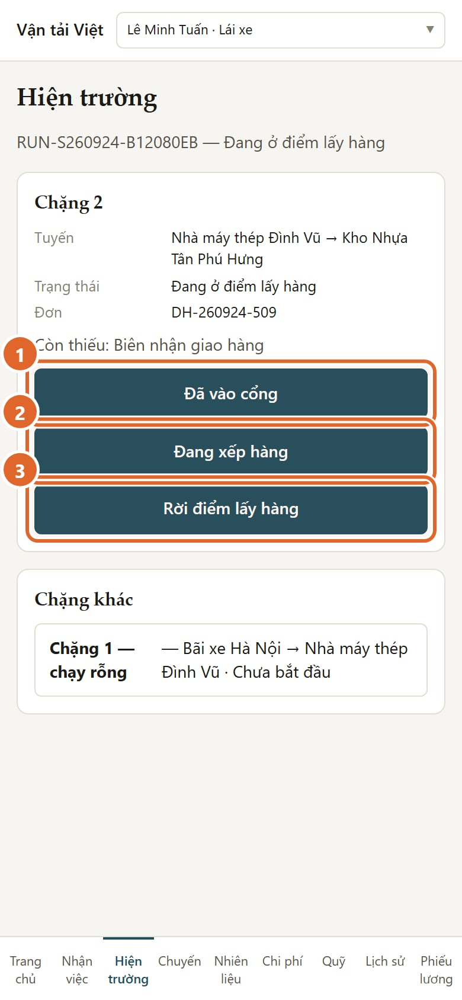
- Đã vào cổng: khi xe vào cổng nhà máy hoặc kho.
- Đang xếp hàng: khi bắt đầu xếp hàng. Nếu xếp hàng ở điểm thứ hai, ra khỏi màn Hiện trường rồi vào lại mới bấm được lần mới; bấm liền tay chỉ gửi lại mốc cũ.
- Rời điểm lấy hàng: khi xe đã lên hàng và rời đi.
Nút chụp giấy hiện sau mốc tương ứng: giấy vào cổng sau "Đã vào cổng", phiếu xếp hàng sau "Đang xếp hàng", phiếu cân sau "Rời điểm lấy hàng". Chụp được thì tốt, nhưng không bắt buộc.
4. Trên đường
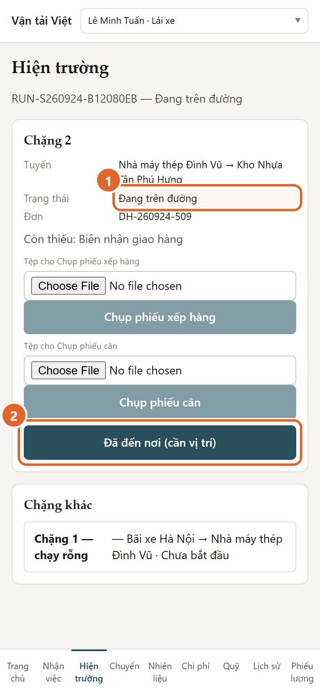
- Trạng thái chuyển sang "Đang trên đường".
- Tới nơi giao thì bấm "Đã đến nơi (cần vị trí)".
Hai nút có chữ "(cần vị trí)" lấy vị trí điện thoại đúng lúc bấm: "Đã đến nơi" và "Khách đã nhận hàng". Các nút khác không cần vị trí. Nếu bấm lại sau lỗi, hệ thống dùng vị trí của lần bấm đầu.
5. Khi máy chưa bật định vị
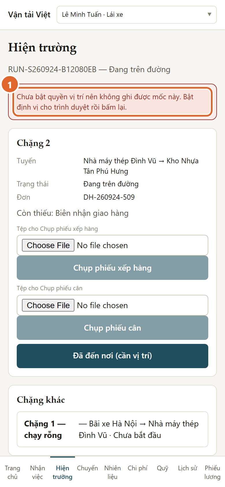
- Màn báo: chưa bật quyền vị trí nên mốc chưa được ghi.
Bật định vị cho trình duyệt, ra chỗ thoáng, rồi bấm lại. Mốc chỉ được ghi khi máy lấy được vị trí.
6. Đã đến nơi: chờ người nhận
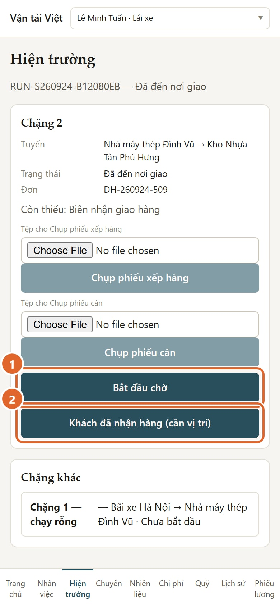
- Bắt đầu chờ: bấm khi phải chờ người nhận.
- Khách đã nhận hàng (cần vị trí): bấm khi giao xong.
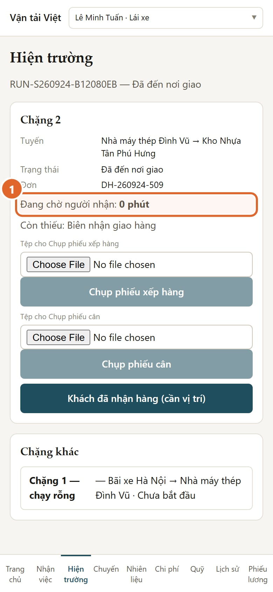
- Màn hiện số phút đã chờ theo giờ hệ thống, cập nhật khoảng 30 giây một lần.
- "Bắt đầu chờ" chỉ có sau "Đã đến nơi", và trước khi khách nhận hàng.
- Không có nút dừng chờ. Thời gian chờ tự dừng khi bạn bấm "Khách đã nhận hàng".
7. Chụp biên nhận giao hàng
Sau "Khách đã nhận hàng", màn nhắc chụp biên nhận.
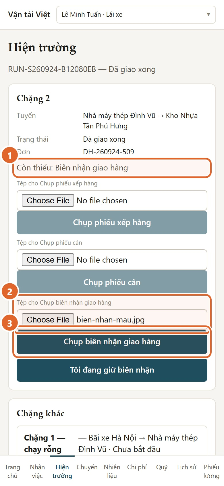
- Còn thiếu: Biên nhận giao hàng. Đây là giấy bắt buộc.
- Chọn ảnh biên nhận.
- Bấm "Chụp biên nhận giao hàng" để gửi.
Ảnh phải thấy rõ chữ ký người nhận, số lượng, ngày. Chụp thẳng, đủ sáng, không mất góc.
Nếu bạn còn cầm bản giấy, bấm "Tôi đang giữ biên nhận".
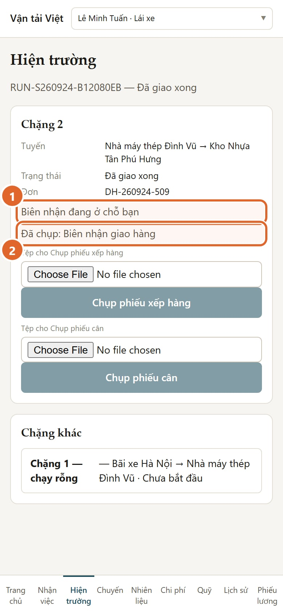
- Biên nhận đang ở chỗ bạn: nhớ nộp bản giấy cho văn phòng.
- Đã chụp: Biên nhận giao hàng: ảnh đã gửi thành công.
8. Nhiên liệu: ghi phiếu đổ dầu
Vào mục Nhiên liệu ở thanh dưới.
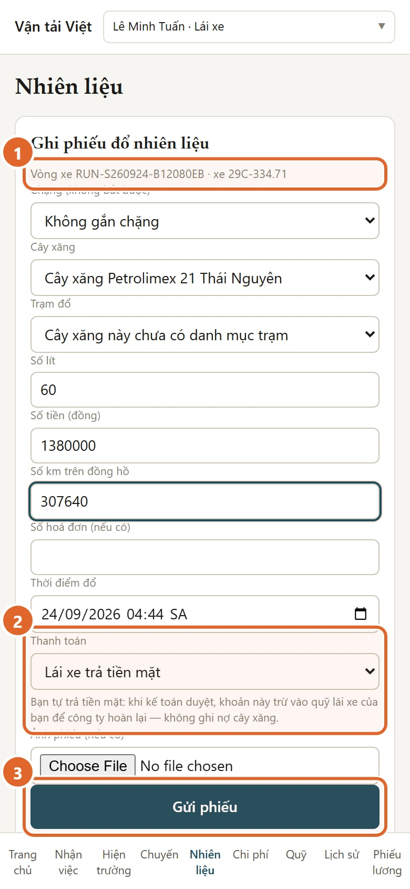
- Vòng xe và xe được điền sẵn theo việc đang làm.
- Thanh toán: chọn đúng ai trả tiền. Dòng chữ bên dưới nói rõ tiền đi đâu.
- Bấm "Gửi phiếu".
| Bạn chọn | Nghĩa là |
|---|---|
| Lái xe trả tiền mặt | Bạn tự trả. Khi kế toán duyệt, khoản này vào quỹ của bạn để công ty hoàn lại. Không ghi nợ cây xăng |
| Ghi nợ cây xăng | Cây xăng cho công ty nợ. Khoản này vào công nợ cây xăng. Không đụng tới quỹ của bạn |
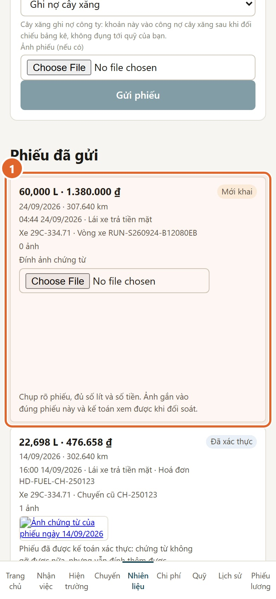
- Phiếu vừa gửi hiện ở "Phiếu đã gửi", trạng thái "Mới khai". Bấm "Đính ảnh chứng từ" để gắn ảnh phiếu nếu chưa gắn.
Kế toán sẽ xác thực hoặc từ chối kèm lý do. Phiếu bị từ chối thì bấm "Nộp lại phiếu" để gửi lại đúng số đã khai, đính thêm ảnh nếu cần. Nếu bị từ chối vì sai số lít, tiền hay km thì không sửa được trên điện thoại: hỏi kế toán, có thể phải ghi phiếu mới.
9. Chi phí dọc đường
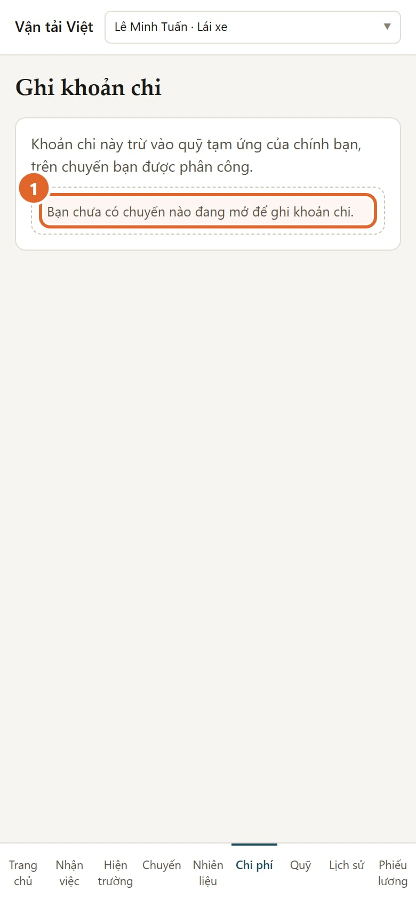
- Hiện chưa ghi được khoản chi dọc đường (cầu đường, bốc xếp, bến bãi, sửa xe) cho việc văn phòng giao theo vòng xe.
Có khoản chi dọc đường thì báo văn phòng và giữ hoá đơn.
10. Quỹ và phiếu lương
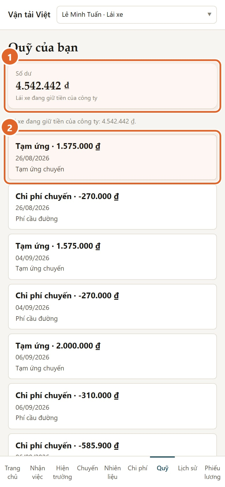
- Số dư quỹ và ý nghĩa của nó:
- "Lái xe đang giữ tiền của công ty";
- "Đã cân bằng";
- "Công ty đang nợ lái xe".
- Từng khoản: tạm ứng, chi phí, hoàn quỹ. Bạn chỉ xem, không sửa được.
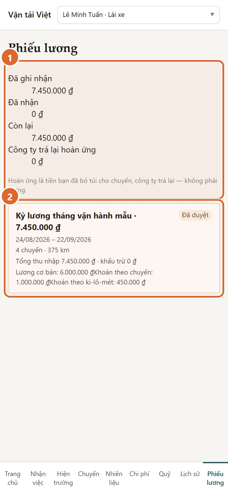
- Bảng quyết toán của tôi:
- lương đã ghi nhận;
- đã nhận;
- còn lại;
- hoàn ứng công ty còn phải trả bạn.
- Phiếu lương. Chỉ phiếu kế toán đã công bố mới hiện ở đây.
Thấy phiếu lương thiếu chuyến hay km, hãy báo kế toán.
11. Khi mất sóng hoặc bấm không được
- Hệ thống cần mạng. Chưa có chế độ làm việc khi mất sóng.
- Mất sóng lúc bấm thì đợi có sóng rồi bấm lại. Bấm lại cùng một mốc không tạo mốc trùng.
- Màn Hiện trường tự làm mới. Nếu thấy dòng "Chưa làm mới được việc hiện trường", điện thoại đang yếu sóng; màn vẫn hiện lần đọc trước.
- Nếu một mốc cần vị trí báo lỗi "Lai xe dang co mot phien mo tren mot chu the khac…" hoặc "…tu mot thiet bi khac" (chữ không dấu), bạn gọi văn phòng. Đừng bấm lặp lại nhiều lần.
12. Những gì bạn không thấy
Màn hình lái xe không có:
- giá cước;
- doanh thu;
- biên;
- công nợ của khách.
Máy chủ không gửi những số này xuống điện thoại. Đây là phân quyền dữ liệu, không phải chỉ ẩn nút.